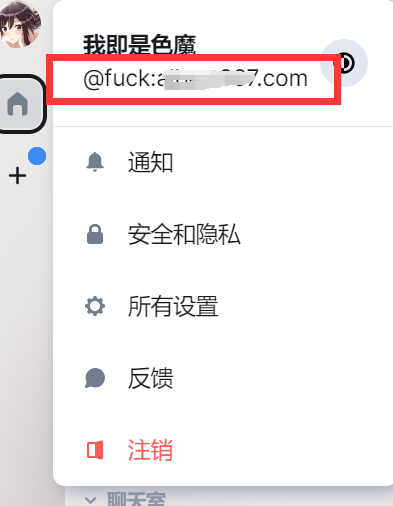

快速开始¶
在看本文前，你可能需要看一下 Matrix 关于 Homeserver 的 介绍。
当然，如果你只是服务器的一位用户，你也完全可以不用去了解这些细节，只需要知道你在使用1台主服务器聊天，
需要设置它即可。
了解了Matrix和其它聊天软件的不同之处后，我们就可以开始使用了。
客户端¶
Matrix 的客户端实现有很多，其中 Element 是 官方 提供的客户端实现。
当然，我们也可以使用 其它 开源实现，
它们基本都涵盖了所有平台(Linux/Windows/Android/Mac/Ios)，如果你遇到打不开的情况，可能需要一些翻墙技巧的帮助。
👇下面将提供 Element⚡ 使用步骤 👇👇
Element Windows客户端¶
由于笔者使用的 Windows 和 Android 平台， 所以演示 Mac 和 IOS 的客户端。但是理论上它们的交互甚至UI都是一致的。
你可以参考下面演示 Element for Windows 的交互逻辑，完成自己的第一次 Homeserver 配置，注册、登录等操作。
安装¶
注意：请先 配置 Shadowsocks 代理 再继续下面的操作。
这个章节使用的是 Windows 安装包 ， 你也许需要其它的 安装包 ，安装步骤非常简单，双击它就会自动安装到用户应用路径:
C:\Users\%USERPROFILE%\AppData\Local\element-desktop
Homeserver 设置¶
如果你仔细看过关于 Homeserver 的 介绍，你可以发现由于 Matrix 是通过 Homeserver 维护用户和聊天室， 我们需要做的是将这个 Homeserver 配置在登录注册中，以便向目标的 Matrix Server 请求服务。
Homesever你可以理解为一个私有的服务器。如果你是第一次使用，需要向这个 Homeserver 进行创建账号。需要注意的是，Homeserver 的管理员需要开启注册配置。
如图，默认它是官方的 Homesever。我们将
matrix.org替换成自己的 Homesever 即可。

储存自己的密钥¶
登录成功后，你需要保存自己的密钥，它是一串字符，你也可以用文本的形式保存，基本上它被命名为：
security-key.txt
以后再登录时需要用它进行校验，或者用其它在线的平台扫码校验，但这总归部署方便的，所有需要注意不要丢失它。
Matrix ID¶
点击头像后，你会发现自己的Matrix ID。它是一个唯一的身份信息，添加用户时你将用到它。
基本上，它是这样组成的：
@user:servername.com
@用户名:配置的servernname
如图：
{kind=link}
服务端¶
…